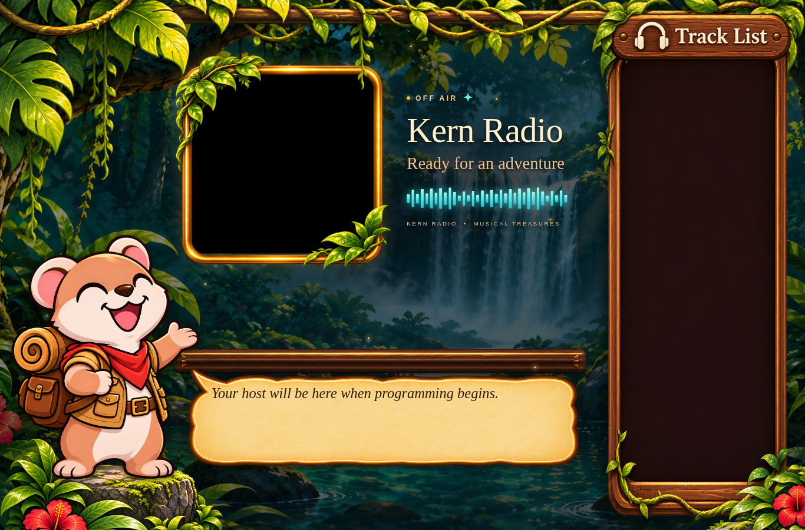
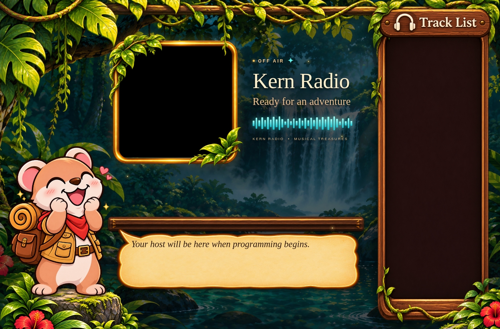
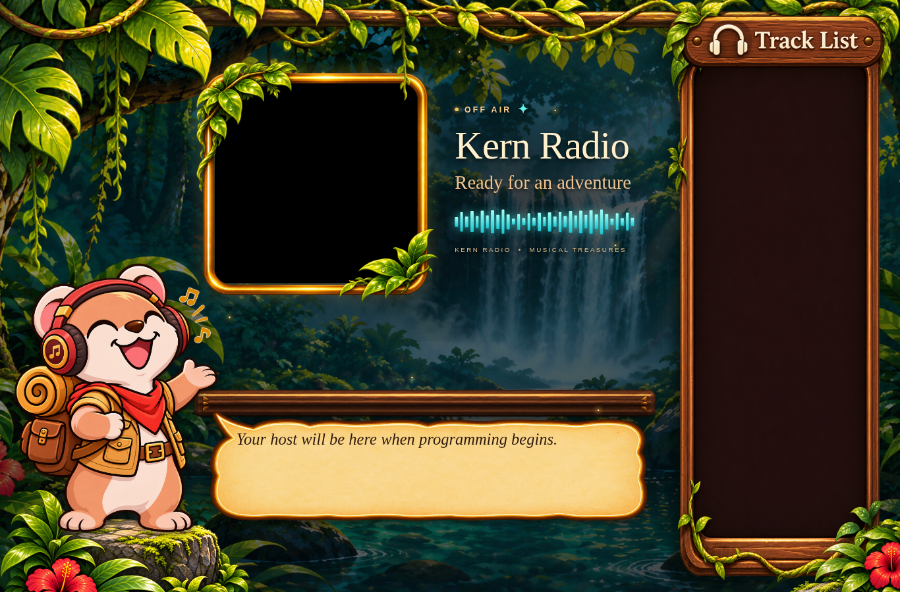
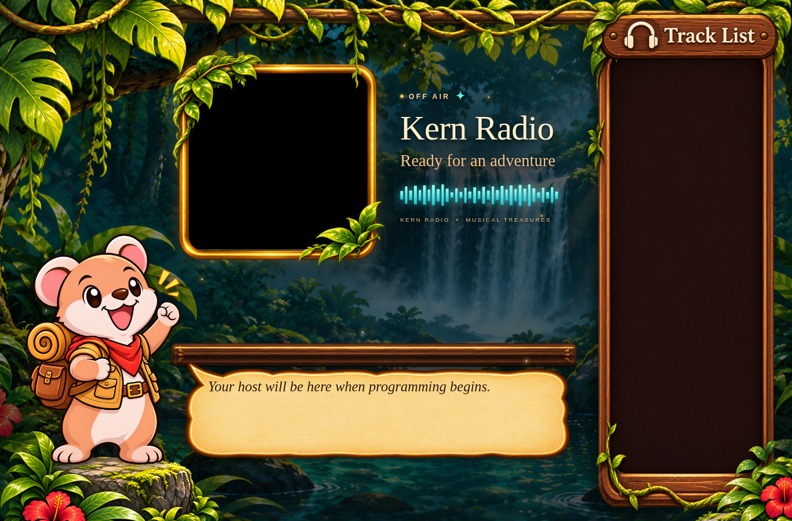
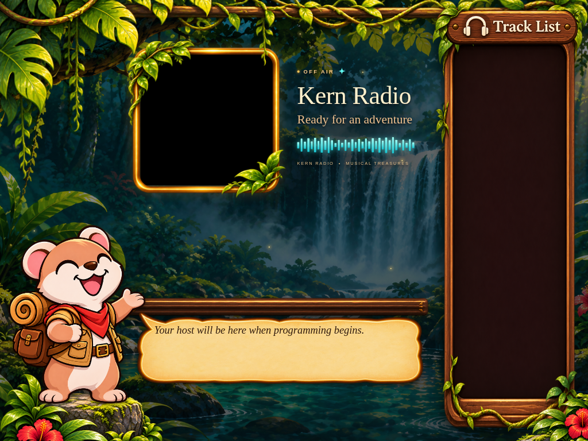
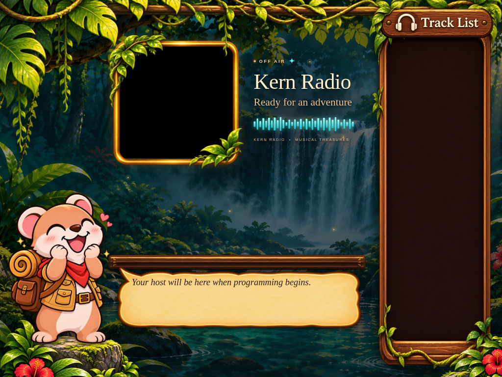
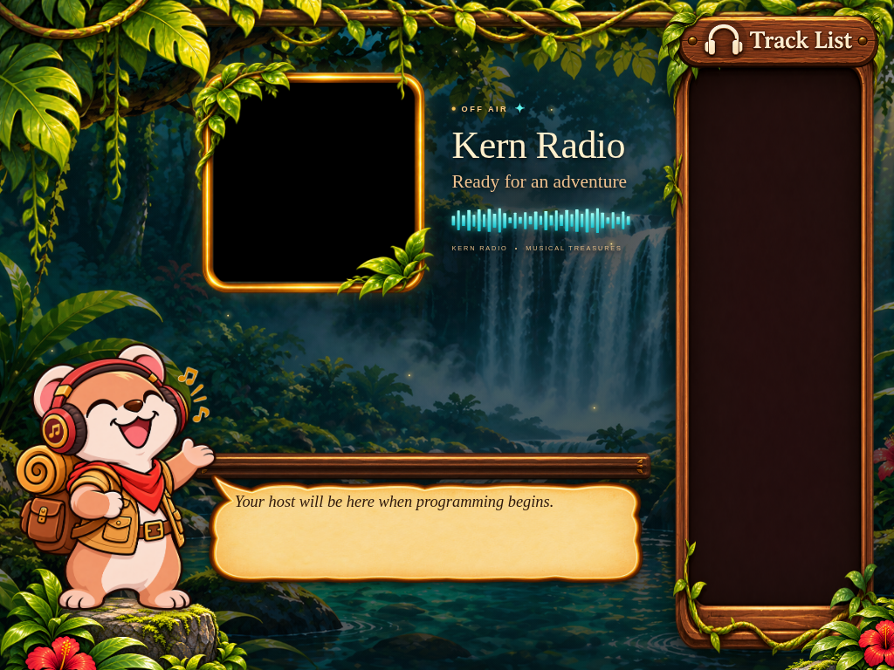
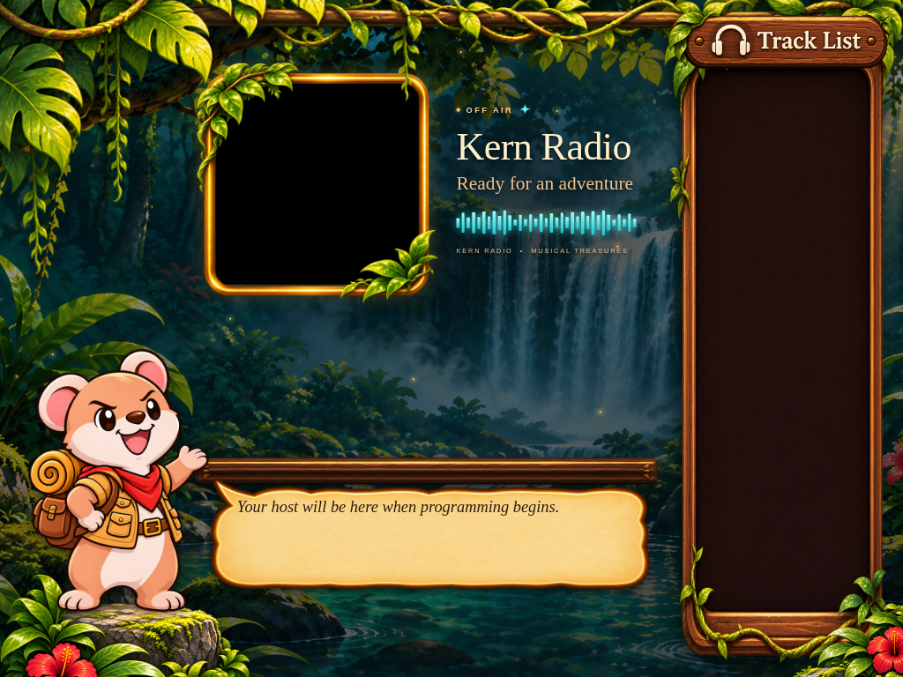
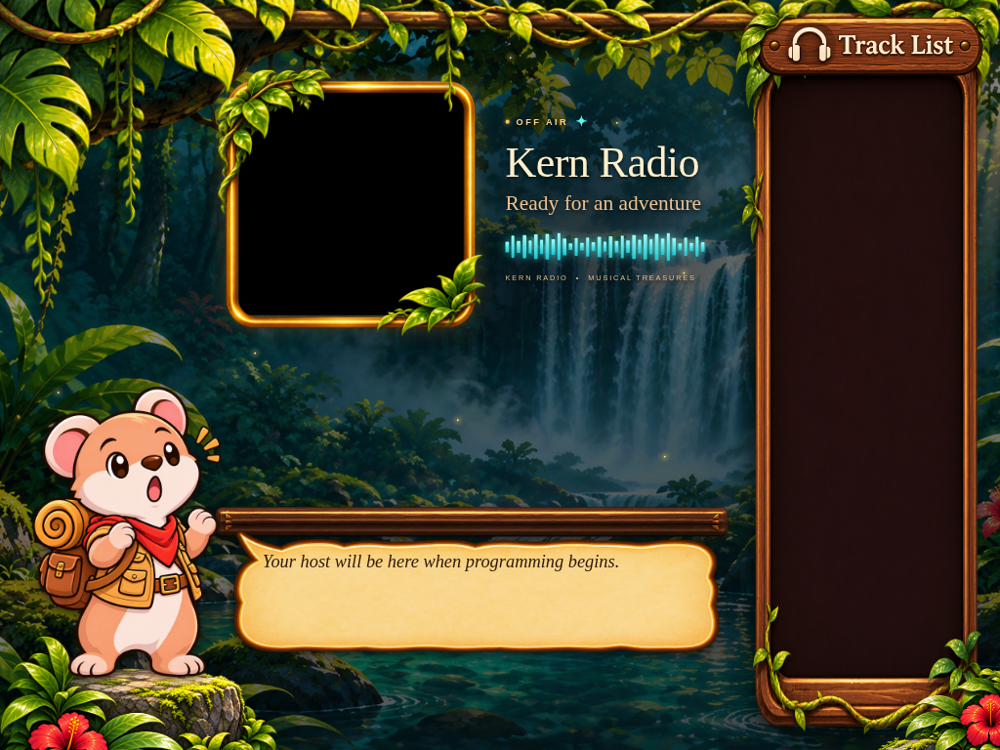
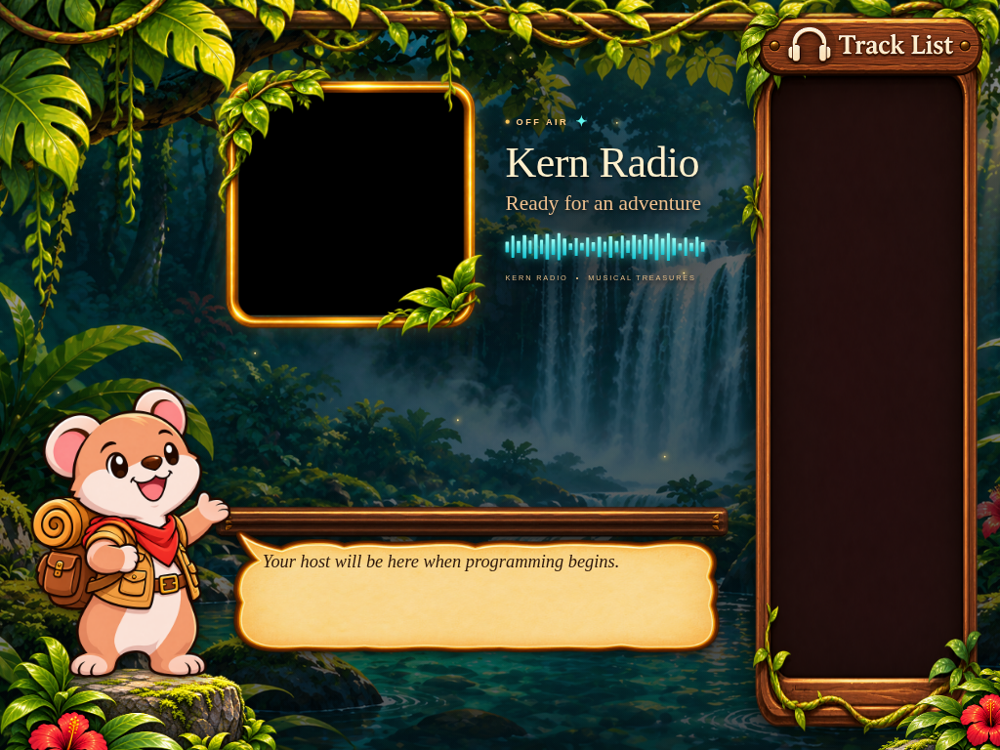

Actual frontend screenshots with all nine expressions. Each viewport uses the same fixed mascot display area. Source images keep their proportions and may have different canvas dimensions or transparent padding. Click a screenshot to inspect it at full size. Captured off air, without starting music or changing the running station; decorative motion is paused for consistent comparison.









